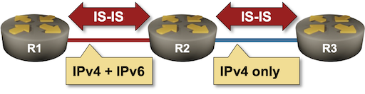

Dual-Stack (IPv4+IPv6) IS-IS Routing
Adding IPv6 support to IS-IS seems like a no-brainer. The data structures describing the network topology are extensible, and we already have TLVs for links and IPv4 prefixes. Let’s add IPv6 prefixes and call it a day. That’s the approach taken by RFC 5308. Unfortunately, the devil usually hides in the seemingly irrelevant details, and we’ll explore those in this lab exercise.
We’ll use a very simple topology with three routers. The only quirk is the addressing on the R2-R3 link; while all three routers have an IPv6 address configured on their loopback interface, the R2-R3 link does not run IPv6.

Device Requirements
Use any device supported by the netlab IS-IS configuration module.
Starting the Lab
You can start the lab on your own lab infrastructure or in GitHub Codespaces (more details):
- Change directory to
basic/5-ipv6 - Execute netlab up
- Log into lab devices with netlab connect
You’ll get a lab with:
- IPv4 and IPv6 addresses on loopback interfaces
- IS-IS configured for IPv4 routing
- IPv6 LLA configured on the R1-R2 link but not on the R2-R3 link.
Initial Routing Tables
Check the routing tables on R1 and verify that it can reach the loopback interfaces of R2 and R3. You should get these printouts on FRRouting and Arista EOS:
The IPv4 routing table on R1 running FRRouting
r1# show ip route
Codes: K - kernel route, C - connected, L - local, S - static,
R - RIP, O - OSPF, I - IS-IS, B - BGP, E - EIGRP, N - NHRP,
T - Table, v - VNC, V - VNC-Direct, A - Babel, F - PBR,
f - OpenFabric, t - Table-Direct,
> - selected route, * - FIB route, q - queued, r - rejected, b - backup
t - trapped, o - offload failure
L * 10.0.0.1/32 is directly connected, lo, 00:00:21
C>* 10.0.0.1/32 is directly connected, lo, 00:00:21
I>* 10.0.0.2/32 [115/20] via 10.1.0.2, eth1, weight 1, 00:00:17
I>* 10.0.0.3/32 [115/30] via 10.1.0.2, eth1, weight 1, 00:00:17
I 10.1.0.0/30 [115/20] via 10.1.0.2, eth1 inactive, weight 1, 00:00:17
C>* 10.1.0.0/30 is directly connected, eth1, 00:00:21
L>* 10.1.0.1/32 is directly connected, eth1, 00:00:21
I>* 10.1.0.4/30 [115/20] via 10.1.0.2, eth1, weight 1, 00:00:17
The IPv4 routing table on R1 running Arista EOS
r1>show ip route | begin Gateway
Gateway of last resort is not set
C 10.0.0.1/32
directly connected, Loopback0
I L2 10.0.0.2/32 [115/20]
via 10.1.0.2, Ethernet1
I L2 10.0.0.3/32 [115/30]
via 10.1.0.2, Ethernet1
C 10.1.0.0/30
directly connected, Ethernet1
I L2 10.1.0.4/30 [115/20]
via 10.1.0.2, Ethernet1
Check also the IPv6 routing tables. Each router should have only its loopback IPv6 prefix in the IPv6 routing table:
The IPv6 routing table on R1 running FRRouting
r1# show ipv6 route
Codes: K - kernel route, C - connected, L - local, S - static,
R - RIPng, O - OSPFv3, I - IS-IS, B - BGP, N - NHRP,
T - Table, v - VNC, V - VNC-Direct, A - Babel, F - PBR,
f - OpenFabric, t - Table-Direct,
> - selected route, * - FIB route, q - queued, r - rejected, b - backup
t - trapped, o - offload failure
C>* 2001:db8:cafe:1::/64 is directly connected, lo, 00:00:31
L>* 2001:db8:cafe:1::1/128 is directly connected, lo, 00:00:31
C>* fe80::/64 is directly connected, eth1, 00:00:30
The IPv6 routing table on R1 running Arista EOS
r1>show ipv6 route
VRF: default
Displaying 1 of 5 IPv6 routing table entries
Source Codes:
C - connected, S - static, K - kernel, O3 - OSPFv3,
B - Other BGP Routes, A B - BGP Aggregate, R - RIP,
I L1 - IS-IS level 1, I L2 - IS-IS level 2, DH - DHCP,
NG - Nexthop Group Static Route, M - Martian,
DP - Dynamic Policy Route, L - VRF Leaked,
G - gRIBI, RC - Route Cache Route,
CL - CBF Leaked Route
C 2001:db8:cafe:1::/64 [0/0]
via Loopback0, directly connected
Configure IS-IS for IPv6 Routing
Enabling IPv6 routing on an existing IS-IS instance is trivial. Some devices (for example, FRRouting) expect you to do it on individual interfaces (including the loopback interfaces) with a command similar to ipv6 router isis; other devices (for example, Arista EOS) require you to configure the IPv6 address family within the IS-IS routing process without changing the interface configuration (address-family ipv6 is a typical command to use)1.
Depending on which devices you use in your lab, configure IPv6 IS-IS routing on all links with IPv6 addresses or IPv6 address family in the IS-IS routing process on all routers.
The Confusing Results
If you’re using Arista EOS in your lab, you’ll notice that R2 no longer wants to have R3 as its IS-IS neighbor. Arista EOS is very strict and forms IS-IS adjacencies only over interfaces with addresses from all address families configured in the IS-IS routing process.
IS-IS neighbors on R2 running Arista EOS
r2#show isis neighbors
Instance VRF System Id Type Interface SNPA State Hold time Circuit Id
Gandalf default r1 L2 Ethernet1 P2P UP 25 60
If you find that too strict, let’s see what happens on devices that use a more relaxed approach. Start the lab with FRRouting devices and enable IS-IS for IPv6 (hint: ipv6 router isis) on all interfaces with IPv6 addresses. After doing that, R2 should still have adjacencies with R3 and R1:
IS-IS neighbors on R2 running FRRouting
r2# show isis neighbor
Area Gandalf:
System Id Interface L State Holdtime SNPA
r1 eth1 2 Up 28 2020.2020.2020
r3 eth2 2 Up 28 2020.2020.2020
However, even though R3 advertises its loopback IPv6 prefix in its LSP, R2 does not have the IPv6 prefix of R3’s loopback in its IPv6 routing table:
The LSP advertised by R3
r2# show isis database detail r3.00-00
Area Gandalf:
IS-IS Level-2 link-state database:
LSP ID PduLen SeqNumber Chksum Holdtime ATT/P/OL
r3.00-00 109 0x00000004 0xa092 1713 0/0/0
Protocols Supported: IPv4, IPv6
Area Address: 49.0001
Hostname: r3
TE Router ID: 10.0.0.3
Router Capability: 10.0.0.3 , D:0, S:0
Extended Reachability: 0000.0000.0002.00 (Metric: 10)
IPv4 Interface Address: 10.0.0.3
Extended IP Reachability: 10.0.0.3/32 (Metric: 10)
Extended IP Reachability: 10.1.0.4/30 (Metric: 10)
IPv6 Reachability: 2001:db8:cafe:3::/64 (Metric: 10)
The IPv6 routing table on R2 (FRRouting)
r2# show ipv6 route
Codes: K - kernel route, C - connected, L - local, S - static,
R - RIPng, O - OSPFv3, I - IS-IS, B - BGP, N - NHRP,
T - Table, v - VNC, V - VNC-Direct, A - Babel, F - PBR,
f - OpenFabric, t - Table-Direct,
> - selected route, * - FIB route, q - queued, r - rejected, b - backup
t - trapped, o - offload failure
I>* 2001:db8:cafe:1::/64 [115/20] via fe80::a8c1:abff:fed7:a0ce, eth1, weight 1, 00:00:47
C>* 2001:db8:cafe:2::/64 is directly connected, lo, 00:24:45
L>* 2001:db8:cafe:2::1/128 is directly connected, lo, 00:24:45
C>* fe80::/64 is directly connected, eth1, 00:24:44
How does R2 know that it can use the link to R3 for IPv4 traffic but not for IPv6 traffic? The lack of an IPv6 interface address is the first hint, as are the IS-IS hello messages. Every IS-IS router advertises the address families configured on an interface in the IS-IS hello messages sent over that interface. You can use a command similar to show isis neighbor detail to check that:
The IS-IS neighbors visible to R2 (FRRouting)
r2# show isis neighbor detail
Area Gandalf:
r1
Interface: eth1, Level: 2, State: Up, Expires in 30s
Adjacency flaps: 1, Last: 27m13s ago
Circuit type: L2, Speaks: IPv4, IPv6
SNPA: 2020.2020.2020
Area Address(es):
49.0001
IPv4 Address(es):
10.1.0.1
IPv6 Address(es):
fe80::a8c1:abff:fed7:a0ce
r3
Interface: eth2, Level: 2, State: Up, Expires in 27s
Adjacency flaps: 1, Last: 27m13s ago
Circuit type: L2, Speaks: IPv4
SNPA: 2020.2020.2020
Area Address(es):
49.0001
IPv4 Address(es):
10.1.0.6
Unfortunately, there is no way to propagate the information from the IS-IS hello packets to other routers in the network. R1 thinks it can safely use R2 to reach the IPv6 loopback address of R3 even though the R2-R3 link carries only IPv4 traffic:
The IPv6 routing table on R1 (FRRouting)
r1# show ipv6 route
Codes: K - kernel route, C - connected, L - local, S - static,
R - RIPng, O - OSPFv3, I - IS-IS, B - BGP, N - NHRP,
T - Table, v - VNC, V - VNC-Direct, A - Babel, F - PBR,
f - OpenFabric, t - Table-Direct,
> - selected route, * - FIB route, q - queued, r - rejected, b - backup
t - trapped, o - offload failure
C>* 2001:db8:cafe:1::/64 is directly connected, lo, 00:29:09
L>* 2001:db8:cafe:1::1/128 is directly connected, lo, 00:29:09
I>* 2001:db8:cafe:2::/64 [115/20] via fe80::a8c1:abff:fe04:e9f6, eth1, weight 1, 00:05:11
I>* 2001:db8:cafe:3::/64 [115/30] via fe80::a8c1:abff:fe04:e9f6, eth1, weight 1, 00:05:11
C>* fe80::/64 is directly connected, eth1, 00:29:08
Takeaway: You can get black holes in your network as soon as a single link in an IS-IS domain does not forward the traffic for all address families configured in IS-IS.
Multi-Topology Routing
The solution to the above conundrum is to use multiple network topologies within a single IS-IS process (multi-topology IS-IS routing, defined in RFC 5120), effectively turning IS-IS into a combination of OSPFv2 and OSPFv3.
Tip
Multi-topology IS-IS is still better than a combination of OSPFv2 and OSPFv3. You’re using a single routing protocol with a single adjacency/flooding mechanism and a unified data structure, whereas OSPFv2 and OSPFv3 have significant differences.
Most IS-IS implementations do not use multi-topology routing by default. You have to enable it with a router configuration command similar to multi-topology (usually within the IPv6 address family) or with a topology ipv6-unicast router configuration command. Do that on all three lab devices.
Validation
After configuring multi-topology IS-IS routing on all routers in your lab, you should have:
- IS-IS adjacencies between R2 and R1/R3
- Routes for all three IPv4 loopback addresses in the IPv4 routing tables of all routes
- Routes for IPv6 loopback prefixes on R1 and R2, but not on R3. R3 cannot participate in the IPv6 topology as it has no IPv6-enabled links with other routers.
IS-IS neighbors on R2
r2# show isis neighbor
Area Gandalf:
System Id Interface L State Holdtime SNPA
r1 eth1 2 Up 28 2020.2020.2020
r3 eth2 2 Up 27 2020.2020.2020
The routes for IPv4 loopbacks on R2
r2# show ip route 10.0.0.0/24 longer-prefixes
Codes: K - kernel route, C - connected, L - local, S - static,
R - RIP, O - OSPF, I - IS-IS, B - BGP, E - EIGRP, N - NHRP,
T - Table, v - VNC, V - VNC-Direct, A - Babel, F - PBR,
f - OpenFabric, t - Table-Direct,
> - selected route, * - FIB route, q - queued, r - rejected, b - backup
t - trapped, o - offload failure
I>* 10.0.0.1/32 [115/20] via 10.1.0.1, eth1, weight 1, 00:43:00
L * 10.0.0.2/32 is directly connected, lo, 00:43:04
C>* 10.0.0.2/32 is directly connected, lo, 00:43:04
I>* 10.0.0.3/32 [115/20] via 10.1.0.6, eth2, weight 1, 00:43:00
The IPv6 routing table on R2
r2# show ipv6 route
Codes: K - kernel route, C - connected, L - local, S - static,
R - RIPng, O - OSPFv3, I - IS-IS, B - BGP, N - NHRP,
T - Table, v - VNC, V - VNC-Direct, A - Babel, F - PBR,
f - OpenFabric, t - Table-Direct,
> - selected route, * - FIB route, q - queued, r - rejected, b - backup
t - trapped, o - offload failure
I>* 2001:db8:cafe:1::/64 [115/20] via fe80::a8c1:abff:fed7:a0ce, eth1, weight 1, 00:02:11
C>* 2001:db8:cafe:2::/64 is directly connected, lo, 00:43:33
L>* 2001:db8:cafe:2::1/128 is directly connected, lo, 00:43:33
C>* fe80::/64 is directly connected, eth1, 00:43:32
Next: Optimize Simple IS-IS Deployments
Behind the Scenes
Multi-topology IS-IS routing modifies two aspects of IS-IS. The IS-IS hello packets carry additional TLVs describing the topologies enabled on the sending router. You can see them if you inspect the IS-IS neighbor details:
Multi-topology IS-IS neighbors (FRRouting)
r2# show isis neighbor detail
Area Gandalf:
r1
Interface: eth1, Level: 2, State: Up, Expires in 27s
Adjacency flaps: 1, Last: 45m9s ago
Circuit type: L2, Speaks: IPv4, IPv6
Topologies:
standard
ipv6-unicast
SNPA: 2020.2020.2020
Area Address(es):
49.0001
IPv4 Address(es):
10.1.0.1
IPv6 Address(es):
fe80::a8c1:abff:fed7:a0ce
r3
Interface: eth2, Level: 2, State: Up, Expires in 29s
Adjacency flaps: 1, Last: 45m9s ago
Circuit type: L2, Speaks: IPv4
SNPA: 2020.2020.2020
Area Address(es):
49.0001
IPv4 Address(es):
10.1.0.6
Tip
Even though we configured the IPv6 topology on R3, it does not advertise that topology over an IPv4-only interface.
Multi-topology IS-IS neighbors (Arista EOS)
r2#show isis nei detail
Instance VRF System Id Type Interface SNPA State Hold time Circuit Id
Gandalf default r1 L2 Ethernet1 P2P UP 27 60
Area addresses: 49.0001
SNPA: P2P
Router ID: 0.0.0.0
Advertised Hold Time: 30
State Changed: 00:00:31 ago at 2024-08-19 13:30:06
IPv4 Interface Address: 10.1.0.1
IPv6 Interface Address: fe80::50dc:caff:fefe:101
Interface name: Ethernet1
Graceful Restart: Supported
Supported Address Families: IPv4, IPv6
Neighbor Supported Address Families: IPv4, IPv6
Gandalf default r3 L2 Ethernet2 P2P UP 22 62
Area addresses: 49.0001
SNPA: P2P
Router ID: 0.0.0.0
Advertised Hold Time: 30
State Changed: 00:00:08 ago at 2024-08-19 13:30:29
IPv4 Interface Address: 10.1.0.6
IPv6 Interface Address: none
Interface name: Ethernet2
Graceful Restart: Supported
Supported Address Families: IPv4
Neighbor Supported Address Families: IPv4
Warning
Arista EOS is very strict in its checking of IS-IS hellos. The adjacency between R2 and R3 is not established until you configure multi-topology IS-IS on R3, even though the link between R2 and R3 supports only IPv4.
The change to the LSPs is even more important. Every router is advertising the topologies it has in its LSP, as well as per-topology links using Extended Reachability (wide metrics) for IPv4-enabled links and Multi-Topology Reachability for IPv6-enabled links.
The LSP advertised by R2 using IPv6 topology (FRRouting)
r2# show isis database detail r2.00-00
Area Gandalf:
IS-IS Level-2 link-state database:
LSP ID PduLen SeqNumber Chksum Holdtime ATT/P/OL
r2.00-00 * 152 0x00000008 0xed0b 1415 0/0/0
Protocols Supported: IPv4, IPv6
Area Address: 49.0001
MT Router Info: ipv4-unicast
MT Router Info: ipv6-unicast
Hostname: r2
TE Router ID: 10.0.0.2
Router Capability: 10.0.0.2 , D:0, S:0
Extended Reachability: 0000.0000.0001.00 (Metric: 10)
Extended Reachability: 0000.0000.0003.00 (Metric: 10)
MT Reachability: 0000.0000.0001.00 (Metric: 10) ipv6-unicast
IPv4 Interface Address: 10.0.0.2
Extended IP Reachability: 10.0.0.2/32 (Metric: 10)
Extended IP Reachability: 10.1.0.0/30 (Metric: 10)
Extended IP Reachability: 10.1.0.4/30 (Metric: 10)
MT IPv6 Reachability: 2001:db8:cafe:2::/64 (Metric: 10) ipv6-unicast
The per-protocol neighbor reachability information allows routers to run the SPF algorithm for individual address families. The algorithm can then discard useless links (for an address family) while building the shortest path tree.
Takeaway: Use multi-topology IS-IS routing in multiprotocol networks unless you can guarantee that all links use the same address families (or love late-night troubleshooting sessions).
Next: Optimize Simple IS-IS Deployments
Reference Information
Lab Wiring
| Origin Device | Origin Port | Destination Device | Destination Port |
|---|---|---|---|
| r1 | eth1 | r2 | eth1 |
| r2 | eth2 | r3 | eth1 |
Lab Addressing
| Node/Interface | IPv4 Address | IPv6 Address | Description |
|---|---|---|---|
| r1 | 10.0.0.1/32 | 2001:db8:cafe:1::1/64 | Loopback |
| eth1 | 10.1.0.1/30 | LLA | r1 -> r2 |
| r2 | 10.0.0.2/32 | 2001:db8:cafe:2::1/64 | Loopback |
| eth1 | 10.1.0.2/30 | LLA | r2 -> r1 |
| eth2 | 10.1.0.5/30 | r2 -> r3 | |
| r3 | 10.0.0.3/32 | 2001:db8:cafe:3::1/64 | Loopback |
| eth1 | 10.1.0.6/30 | r3 -> r2 |
-
I’m positive you have to do both on some devices ;) ↩